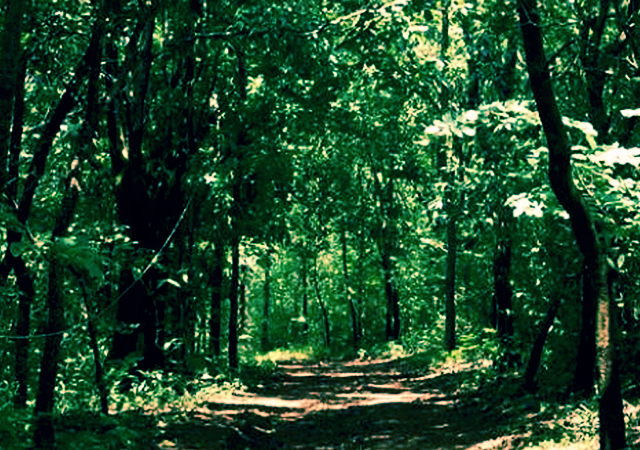

Kasargod is a small coastal town in Northern Pary of Kerala displaying a delightful blend of various religions, culture and bounty of nature. Blessed with majestic forts, lofty hills, beautiful offbeat backwaters, temples and pristine beaches, the town oozes charm and tranquillity from every aspect.Kasargod is also known for its rich and glorious past, is considered to be home to some of the best-preserved forts in Kerala. The variety of art and culture of the town speaks volume about its diversity. In fact, one can hear about seven languages spoken in the town, Tulu, Malayalam, Kannada, Tamil and Konkani being the most famous ones.
1.Bekal Fort
Bekal Fort is a historic fort which was built almost 300 years ago. It is surrounded by a beautiful beach offering a mesmerizing view of the Arabian Sea from its observation tower where once the cannons were placed.Bekal Fort is one of the largest and most preserved forts in Kerala. The fort still stands in its full glory narrating a story of its past. Every year tourists visit this fort which is nestled in the lap of nature.
2.Ananthapura Lake Temple
The only lake temple in Kerala, Ananthapura Lake temple is believed to be the original seat of Ananth Padmanabha Swami. It is built in the middle of a lake in the small village of Ananthapura.The temple is located 6 km from Kumbala. The temple structure is built out of a massive rock and it is dedicated to Anantha Padmanabha Swami. The mural painting on the walls of the temple depicts the stories from the Puranas. Besides the paintings, there is a cave that leads to a pond.
3.Hosdurg Fort
Hosdurg Fort is the landmark of Kanhangad, hence it’s also known as Kanhangad Fort. The fort is famous for its chain of forts built by Somashekara Nayak of Ikkeri dynasty.Karpooreshwara temple, constructed by the Nayaks, is situated in the south-western part of the fort. The NithyAnandashram with 45 caves is an internationally recognized spiritual centre that makes the fort popular. Lots of tourists visit this beautiful fort every year.
4.Kareem Forest Park
The 32 acres of land situated at Puliyamkulam, near Parappa which is 23 km away east of Kanhangad town is the only man-made forest in Kerala.Kareem forest park is a remarkable example of forest conservation. A native of Kasaragod named Kareem is the man behind this great green venture. It is a paradise for all the nature lovers, scientists, biologists, environmentalists and Ayurveda students.

5.Maipady Palace
Maipady Palace is an ancient palace located nearly 8 km from Kasargod town on Kasargod-Perla Road. This popular site belongs to Kumbala kings.The Maipady Palace has a history of about 200 years. Frequent buses are available to reach this palace from Kasaragod town. Madhur Village located near to the palace is also a popular destination among tourists.